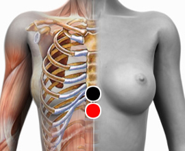

Tricophyton Rubrum
Par
apófisis xifoides - apófisis xifoides
dedo medio - d. medio
cruris - cruris

Generalidades:
Hongo dermatofito que infecta a los humanos. Según la zona infectada produce los siguientes trastornos:
Transmisión
Se contagia por contacto con objetos contaminados (toallas, zapatos, prendas, etcétera).